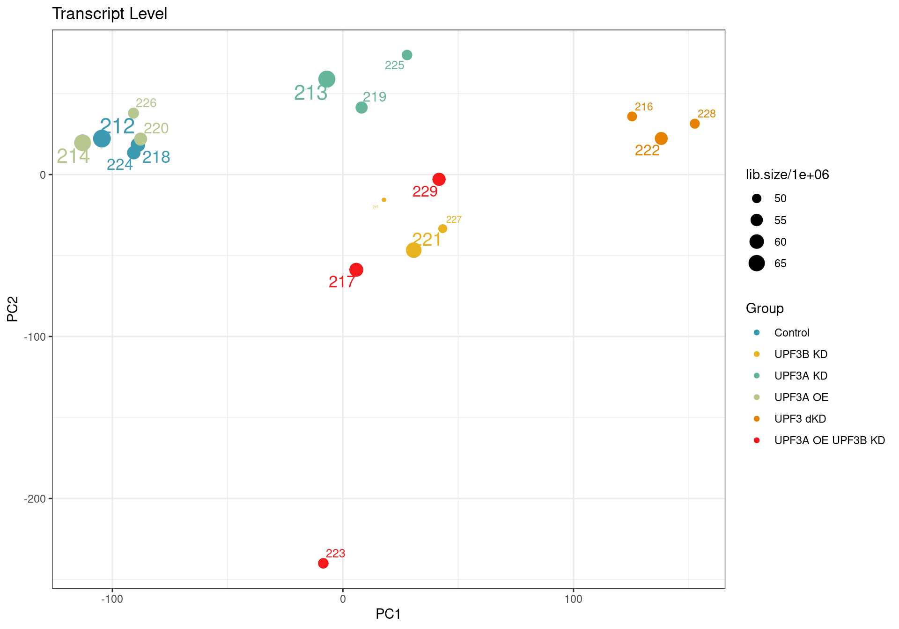
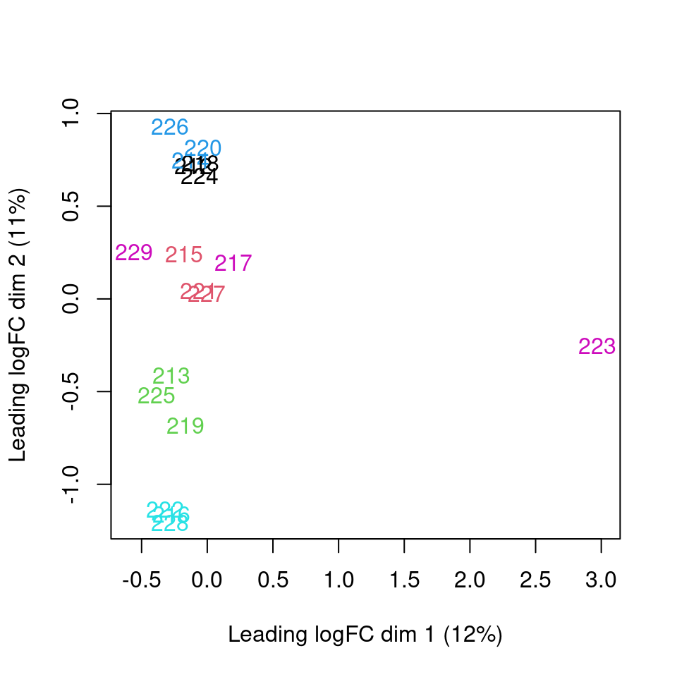
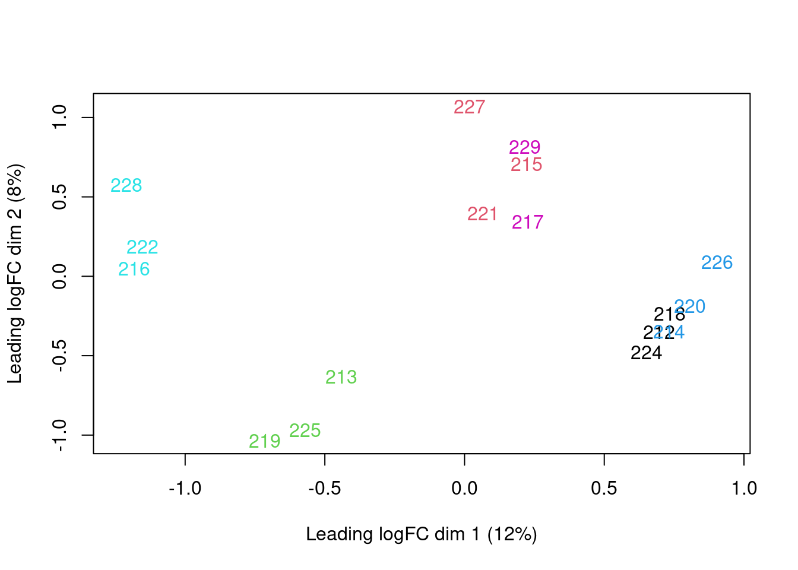
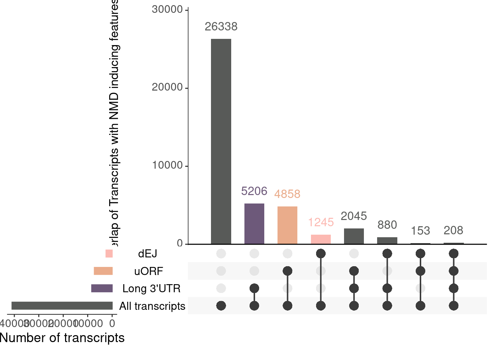
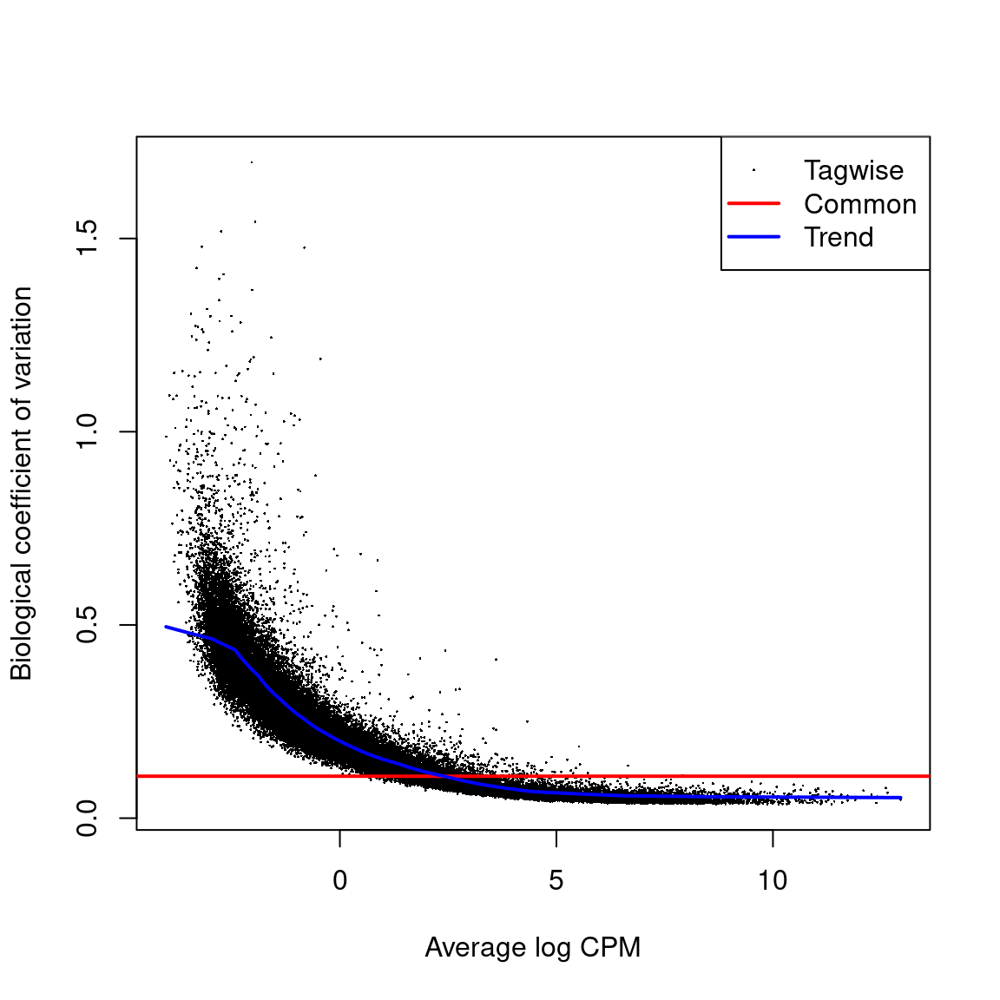
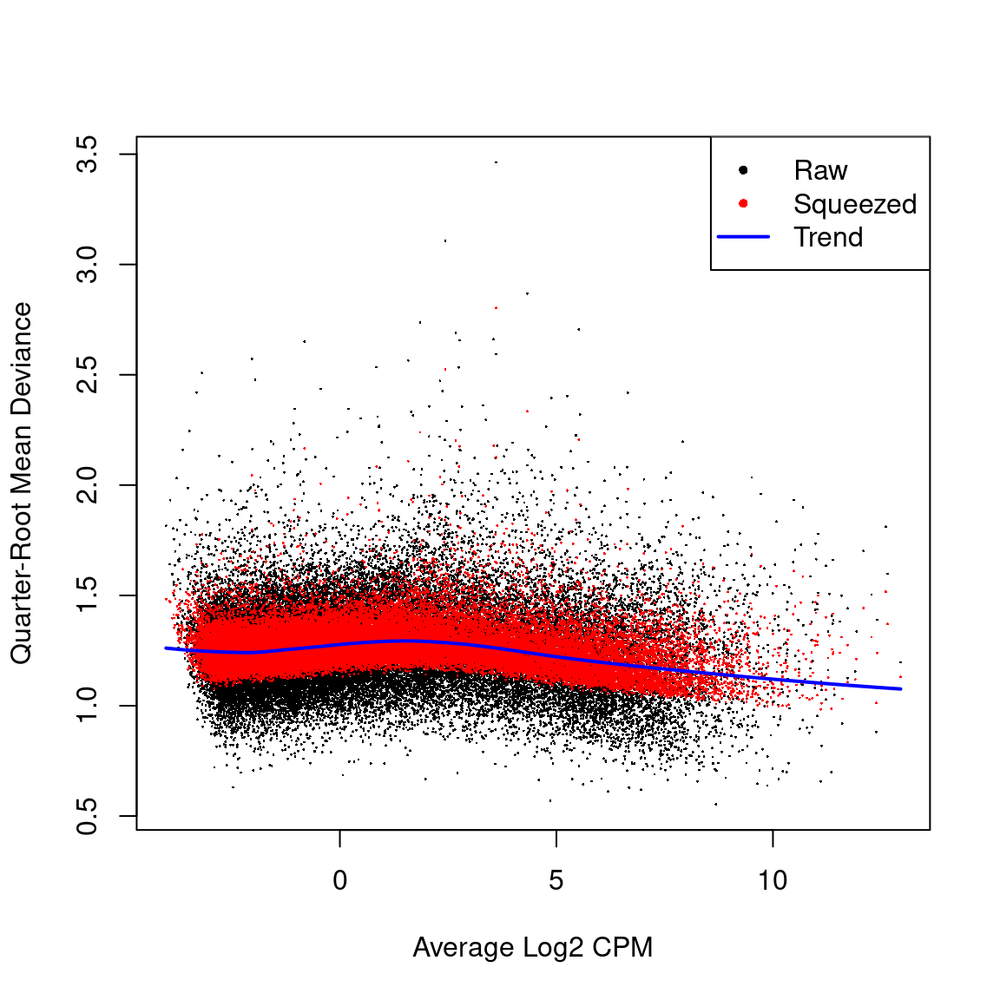
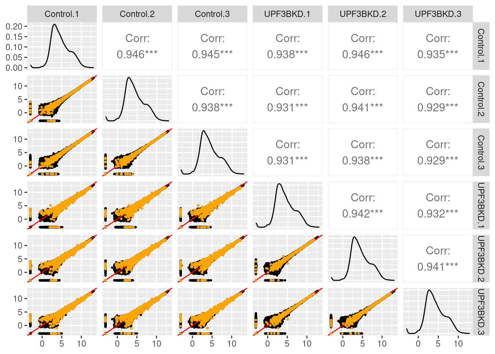
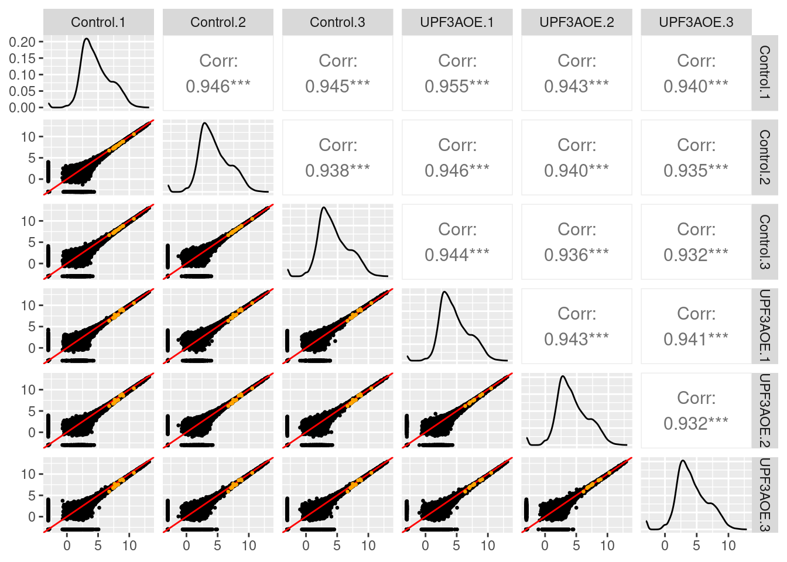
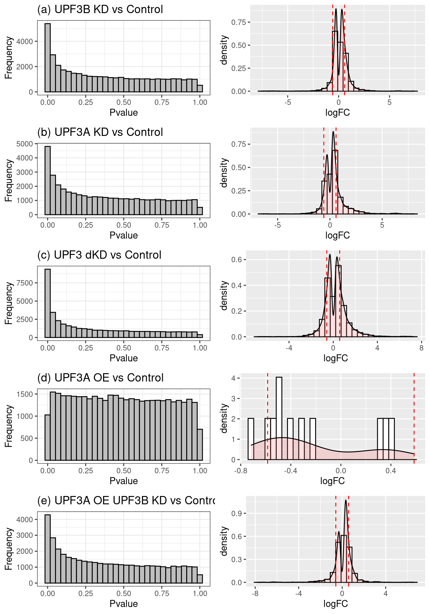

Last updated: 2026-09-08
Checks: 5 2
Knit directory: NMD-analysis/
This reproducible R Markdown analysis was created with workflowr (version 1.7.2). The Checks tab describes the reproducibility checks that were applied when the results were created. The Past versions tab lists the development history.
The R Markdown file has unstaged changes. To know which version of
the R Markdown file created these results, you’ll want to first commit
it to the Git repo. If you’re still working on the analysis, you can
ignore this warning. When you’re finished, you can run
wflow_publish to commit the R Markdown file and build the
HTML.
Great job! The global environment was empty. Objects defined in the global environment can affect the analysis in your R Markdown file in unknown ways. For reproduciblity it’s best to always run the code in an empty environment.
The command set.seed(20230314) was run prior to running
the code in the R Markdown file. Setting a seed ensures that any results
that rely on randomness, e.g. subsampling or permutations, are
reproducible.
Great job! Recording the operating system, R version, and package versions is critical for reproducibility.
Nice! There were no cached chunks for this analysis, so you can be confident that you successfully produced the results during this run.
Using absolute paths to the files within your workflowr project makes it difficult for you and others to run your code on a different machine. Change the absolute path(s) below to the suggested relative path(s) to make your code more reproducible.
| absolute | relative |
|---|---|
| /home/neuro/Documents/NMD_analysis/Analysis/NMD-analysis/output/Thesis_plots/all_overlaps-transcript.svg | output/Thesis_plots/all_overlaps-transcript.svg |
| /home/neuro/Documents/NMD_analysis/Analysis/NMD-analysis/output/Thesis_plots/all_overlaps_enrichment.svg | output/Thesis_plots/all_overlaps_enrichment.svg |
| /home/neuro/Documents/NMD_analysis/Analysis/NMD-analysis/output/Thesis_plots/overlaps/DETs/Upf3_paralogs_cor.png | output/Thesis_plots/overlaps/DETs/Upf3_paralogs_cor.png |
| /home/neuro/Documents/NMD_analysis/Analysis/NMD-analysis/output/Thesis_plots/overlaps/DETs/Upf3dKD_Upf3b_cor.png | output/Thesis_plots/overlaps/DETs/Upf3dKD_Upf3b_cor.png |
| /home/neuro/Documents/NMD_analysis/Analysis/NMD-analysis/output/Thesis_plots/overlaps/DETs/Upf3aOE_Upf3b_cor.png | output/Thesis_plots/overlaps/DETs/Upf3aOE_Upf3b_cor.png |
| /home/neuro/Documents/NMD_analysis/Analysis/NMD-analysis/output/Thesis_plots/overlaps/DETs/Upf3aOEKD_Upf3b_cor.png | output/Thesis_plots/overlaps/DETs/Upf3aOEKD_Upf3b_cor.png |
| /home/neuro/Documents/NMD_analysis/Analysis/NMD-analysis/output/Thesis_plots/overlaps/DETs/Upf3aKD_Upf3dKD_cor.png | output/Thesis_plots/overlaps/DETs/Upf3aKD_Upf3dKD_cor.png |
| /home/neuro/Documents/NMD_analysis/Analysis/NMD-analysis/output/Thesis_plots/overlaps/DETs/Upf3aKD_Upf3aOE_cor.png | output/Thesis_plots/overlaps/DETs/Upf3aKD_Upf3aOE_cor.png |
| /home/neuro/Documents/NMD_analysis/Analysis/NMD-analysis/output/Thesis_plots/overlaps/DETs/Upf3aKD_Upf3aOEKD_cor.png | output/Thesis_plots/overlaps/DETs/Upf3aKD_Upf3aOEKD_cor.png |
| /home/neuro/Documents/NMD_analysis/Analysis/NMD-analysis/output/Thesis_plots/overlaps/DETs/Upf3aOE_Upf3dKD_cor.png | output/Thesis_plots/overlaps/DETs/Upf3aOE_Upf3dKD_cor.png |
| /home/neuro/Documents/NMD_analysis/Analysis/NMD-analysis/output/Thesis_plots/overlaps/DETs/Upf3aOEKD_Upf3dKD_cor.png | output/Thesis_plots/overlaps/DETs/Upf3aOEKD_Upf3dKD_cor.png |
| /home/neuro/Documents/NMD_analysis/Analysis/NMD-analysis/output/Thesis_plots/overlaps/DEGs-DETs/Upf3b_cor.png | output/Thesis_plots/overlaps/DEGs-DETs/Upf3b_cor.png |
| /home/neuro/Documents/NMD_analysis/Analysis/NMD-analysis/output/Thesis_plots/overlaps/DEGs-DETs/Upf3a_cor.png | output/Thesis_plots/overlaps/DEGs-DETs/Upf3a_cor.png |
| /home/neuro/Documents/NMD_analysis/Analysis/NMD-analysis/output/Thesis_plots/overlaps/DEGs-DETs/Upf3dKD_cor.png | output/Thesis_plots/overlaps/DEGs-DETs/Upf3dKD_cor.png |
| /home/neuro/Documents/NMD_analysis/Analysis/NMD-analysis/output/Thesis_plots/overlaps/DEGs-DETs/Upf3a_Upf3b_kD_cor.png | output/Thesis_plots/overlaps/DEGs-DETs/Upf3a_Upf3b_kD_cor.png |
| /home/neuro/Documents/NMD_analysis/Analysis/NMD-analysis/output/Thesis_plots/all_overlaps-transcript-DEGs.svg | output/Thesis_plots/all_overlaps-transcript-DEGs.svg |
Great! You are using Git for version control. Tracking code development and connecting the code version to the results is critical for reproducibility.
The results in this page were generated with repository version 68b6279. See the Past versions tab to see a history of the changes made to the R Markdown and HTML files.
Note that you need to be careful to ensure that all relevant files for
the analysis have been committed to Git prior to generating the results
(you can use wflow_publish or
wflow_git_commit). workflowr only checks the R Markdown
file, but you know if there are other scripts or data files that it
depends on. Below is the status of the Git repository when the results
were generated:
Ignored files:
Ignored: .Rhistory
Ignored: .Rproj.user/
Ignored: analysis/Differential-transcript-expression.nb.html
Ignored: analysis/Enichment-analysis-fgsea.nb.html
Ignored: analysis/Publication-Main-figures.nb.html
Ignored: analysis/figure/
Ignored: code/external_code/out/
Ignored: code/external_code/tmp/
Ignored: data/fastq/
Ignored: data/fastqc/
Ignored: data/genewalk/
Ignored: output/
Ignored: tmp/
Unstaged changes:
Modified: .gitignore
Modified: analysis/Differential-transcript-expression.Rmd
Staged changes:
Deleted: analysis/transcript-features.Rmd
Note that any generated files, e.g. HTML, png, CSS, etc., are not included in this status report because it is ok for generated content to have uncommitted changes.
These are the previous versions of the repository in which changes were
made to the R Markdown
(analysis/Differential-transcript-expression.Rmd) and HTML
(docs/Differential-transcript-expression.html) files. If
you’ve configured a remote Git repository (see
?wflow_git_remote), click on the hyperlinks in the table
below to view the files as they were in that past version.
| File | Version | Author | Date | Message |
|---|---|---|---|---|
| Rmd | 68b6279 | urwahnawaz | 2026-09-08 | changes and code refactoring |
| Rmd | 5719ae5 | urwahnawaz | 2026-03-07 | update |
| html | 5719ae5 | urwahnawaz | 2026-03-07 | update |
| html | 8ecf3f0 | unawaz1996 | 2023-05-11 | Build site. |
| Rmd | 6025d0f | unawaz1996 | 2023-05-11 | wflow_publish(c("analysis/index.Rmd", "analysis/Differential-transcript-expression.Rmd", |
| html | 421e1d5 | unawaz1996 | 2023-05-10 | Build site. |
| Rmd | b963fdb | unawaz1996 | 2023-05-10 | Add transcript expression |
Transcript-level counts were retrieved using the
catchSalmon() function from the edgeR package. Once
retrieved, the counts underwent rigourous QC.
According to the quality control analysis, it was revealed that one of the samples was not clustering with its condition group. Investigation into GC content, transcript length and library size revealed no contribution of these factors. To ensure we are getting results that are not skewed we will remove the sample from the transcript level analysis.

Principal component analysis of transcript level data. PCA was performed on log2 transformed CPM after filtering lowly expressed genes. The PCA shows that samples are clustering close to their conditions based on PC1, however one of the samples of the UPF3A OE in UPF3B KD cell line (sample 223), seems to deviate from its condition group and the rest of the data, so needs to be further investigated
| Version | Author | Date |
|---|---|---|
| 5719ae5 | urwahnawaz | 2026-03-07 |

| Version | Author | Date |
|---|---|---|
| 5719ae5 | urwahnawaz | 2026-03-07 |


[1] 0.01177187
Biological coeficcient of variation plot against the average abundance of each transcript. The plot shows the square-root estimates of the common, trended and tagwise NB dispersions.

Quasi-likelihood dispersion aganist gene abundance. Estimates are shown for raw, tended and squeezed dispersions
Min. 1st Qu. Median Mean 3rd Qu. Max.
15.25 15.25 15.25 15.25 15.25 15.25 $Control_UPF3BKD
| Version | Author | Date |
|---|---|---|
| 5719ae5 | urwahnawaz | 2026-03-07 |
$Control_UPF3AOE
| Version | Author | Date |
|---|---|---|
| 5719ae5 | urwahnawaz | 2026-03-07 |

Distribution of p-values and log2Fold changes across conditions after running edgeR
| Version | Author | Date |
|---|---|---|
| 5719ae5 | urwahnawaz | 2026-03-07 |
`
[1] "UPF3B_KD_Control" "UPF3A_KD_Control"
[3] "UPF3A_OE_Control" "UPF3A_KD_UPF3B_KD_Control"
[5] "UPF3A_OE_UPF3B_KD_Control"Significance of overlap and lists
Pearson's product-moment correlation
data: .$logFC and .$gene.FC
t = 47.551, df = 1870, p-value < 2.2e-16
alternative hypothesis: true correlation is not equal to 0
95 percent confidence interval:
0.7186012 0.7596634
sample estimates:
cor
0.7398205 [1] 8.901172e-117[1] 14.36747
R version 4.6.1 (2026-06-24)
Platform: x86_64-pc-linux-gnu
Running under: Ubuntu 22.04.5 LTS
Matrix products: default
BLAS: /usr/lib/x86_64-linux-gnu/blas/libblas.so.3.10.0
LAPACK: /usr/lib/x86_64-linux-gnu/lapack/liblapack.so.3.10.0 LAPACK version 3.10.0
locale:
[1] LC_CTYPE=en_AU.UTF-8 LC_NUMERIC=C
[3] LC_TIME=en_AU.UTF-8 LC_COLLATE=en_AU.UTF-8
[5] LC_MONETARY=en_AU.UTF-8 LC_MESSAGES=en_AU.UTF-8
[7] LC_PAPER=en_AU.UTF-8 LC_NAME=C
[9] LC_ADDRESS=C LC_TELEPHONE=C
[11] LC_MEASUREMENT=en_AU.UTF-8 LC_IDENTIFICATION=C
time zone: Australia/Adelaide
tzcode source: system (glibc)
attached base packages:
[1] grid stats4 tools stats graphics grDevices utils
[8] datasets methods base
other attached packages:
[1] IsoformSwitchAnalyzeR_2.12.0 pfamAnalyzeR_1.12.0
[3] sva_3.60.0 genefilter_1.94.0
[5] mgcv_1.9-4 nlme_3.1-169
[7] satuRn_1.20.0 DEXSeq_1.58.0
[9] BiocParallel_1.46.0 ggrepel_0.9.8
[11] pander_0.6.6 msigdbr_26.1.0
[13] ngsReports_2.14.0 patchwork_1.3.2
[15] VennDiagram_1.8.2 futile.logger_1.4.9
[17] UpSetR_1.4.0 fgsea_1.38.0
[19] GOplot_1.0.2 RColorBrewer_1.1-3
[21] gridExtra_2.3.1 ggdendro_0.2.0
[23] AnnotationHub_4.2.0 BiocFileCache_3.2.0
[25] dbplyr_2.6.0 openxlsx_4.2.8.1
[27] ggiraph_0.9.6 wasabi_1.0.1
[29] sleuth_0.30.1 DT_0.34.0
[31] VennDetail_1.28.0 msigdb_1.20.0
[33] GSEABase_1.74.0 graph_1.90.0
[35] annotate_1.90.0 XML_3.99-0.23
[37] pheatmap_1.0.13 ggvenn_0.1.19
[39] MetBrewer_0.2.0 ggpubr_0.6.3
[41] venn_1.13 viridis_0.6.5
[43] viridisLite_0.4.3 tximport_1.40.0
[45] goseq_1.64.0 geneLenDataBase_1.48.0
[47] BiasedUrn_2.0.12 org.Mm.eg.db_3.23.0
[49] EnsDb.Mmusculus.v79_2.99.0 ensembldb_2.36.0
[51] AnnotationFilter_1.36.0 GenomicFeatures_1.64.0
[53] AnnotationDbi_1.74.0 biomaRt_2.68.0
[55] DESeq2_1.52.0 SummarizedExperiment_1.42.0
[57] Biobase_2.72.0 MatrixGenerics_1.24.0
[59] matrixStats_1.5.0 GenomicRanges_1.64.0
[61] Seqinfo_1.2.0 IRanges_2.46.0
[63] S4Vectors_0.50.0 BiocGenerics_0.58.1
[65] generics_0.1.4 corrplot_0.95
[67] lubridate_1.9.5 forcats_1.0.1
[69] purrr_1.2.2 readr_2.2.0
[71] tidyverse_2.0.0 stringr_1.6.0
[73] tidyr_1.3.2 scales_1.4.0
[75] data.table_1.18.4 readxl_1.5.0
[77] tibble_3.3.1 reshape2_1.4.5
[79] bigPint_1.14.0 dplyr_1.2.1
[81] naniar_1.1.0 glmpca_0.2.0
[83] broom_1.0.13 cowplot_1.2.0
[85] edgeR_4.10.0 limma_3.68.4
[87] glue_1.8.1 ggfortify_0.4.19
[89] stargazer_5.2.3 PerformanceAnalytics_2.1.0
[91] quantmod_0.4.29 TTR_0.24.4
[93] xts_0.14.2 zoo_1.8-15
[95] tidyquant_1.0.12 ggside_0.4.1
[97] ggplot2_4.0.3 GeneOverlap_1.48.0
[99] tximeta_1.30.0 fishpond_2.18.0
[101] magrittr_2.0.5
loaded via a namespace (and not attached):
[1] dichromat_2.0-0.1 vroom_1.7.1
[3] progress_1.2.3 locfdr_1.1-8
[5] nnet_7.3-20 Biostrings_2.80.0
[7] vctrs_0.7.3 digest_0.6.39
[9] png_0.1-9 git2r_0.36.2
[11] MASS_7.3-65 fontLiberation_0.1.0
[13] reshape_0.8.10 httpuv_1.6.17
[15] withr_3.0.3 xfun_0.60
[17] survival_3.8-9 memoise_2.0.1
[19] hexbin_1.28.5 systemfonts_1.3.2
[21] ragg_1.5.2 gtools_3.9.5
[23] pbapply_1.7-4 Formula_1.2-5
[25] GGally_2.4.0 prettyunits_1.2.0
[27] KEGGREST_1.52.0 promises_1.5.0
[29] otel_0.2.0 httr_1.4.8
[31] rstatix_1.0.0 restfulr_0.0.16
[33] rhdf5filters_1.24.0 rhdf5_2.56.0
[35] rstudioapi_0.19.0 UCSC.utils_1.8.0
[37] base64enc_0.1-6 babelgene_22.9
[39] curl_7.1.0 quadprog_1.5-8
[41] SparseArray_1.12.2 xtable_1.8-8
[43] evaluate_1.0.5 S4Arrays_1.12.0
[45] hms_1.1.4 colorspace_2.1-3
[47] filelock_1.0.3 later_1.4.8
[49] lattice_0.22-9 Hmisc_5.2-6
[51] pillar_1.11.1 pwalign_1.8.0
[53] caTools_1.18.3 compiler_4.6.1
[55] stringi_1.8.7 shinycssloaders_1.1.0
[57] GenomicAlignments_1.48.0 plyr_1.8.9
[59] crayon_1.5.3 abind_1.4-8
[61] BiocIO_1.22.0 locfit_1.5-9.12
[63] bit_4.6.0 fastmatch_1.1-8
[65] whisker_0.4.1 textshaping_1.0.5
[67] codetools_0.2-20 bslib_0.11.0
[69] plotly_4.12.0 mime_0.13
[71] splines_4.6.1 Rcpp_1.1.2
[73] cellranger_1.1.0 knitr_1.51
[75] blob_1.3.0 here_1.0.2
[77] BiocVersion_3.23.1 fs_2.1.0
[79] checkmate_2.3.4 admisc_0.40
[81] ggsignif_0.6.4 Matrix_1.7-5
[83] statmod_1.5.2 svglite_2.2.2
[85] tzdb_0.5.0 visdat_0.6.0
[87] pkgconfig_2.0.3 cachem_1.1.0
[89] cigarillo_1.2.0 RSQLite_3.53.3
[91] DBI_1.3.0 fastmap_1.2.0
[93] rmarkdown_2.31 geneplotter_1.90.0
[95] shinydashboard_0.7.3 Rsamtools_2.28.0
[97] sass_0.4.10 BiocManager_1.30.27
[99] ggstats_0.13.0 carData_3.0-6
[101] rpart_4.1.27 farver_2.1.2
[103] yaml_2.3.12 workflowr_1.7.2
[105] foreign_0.8-91 rtracklayer_1.72.0
[107] cli_3.6.6 txdbmaker_1.8.0
[109] lifecycle_1.0.5 lambda.r_1.2.4
[111] backports_1.5.1 timechange_0.4.0
[113] gtable_0.3.6 rjson_0.2.23
[115] parallel_4.6.1 jsonlite_2.0.0
[117] bitops_1.0-9 svMisc_1.4.3
[119] bit64_4.8.2 assertthat_0.2.1
[121] zip_3.0.1 futile.options_1.0.1
[123] jquerylib_0.1.4 lazyeval_0.2.3
[125] shiny_1.13.0 htmltools_0.5.9
[127] GO.db_3.23.1 rappdirs_0.3.4
[129] formatR_1.14 httr2_1.3.0
[131] XVector_0.52.0 gdtools_0.5.1
[133] RCurl_1.98-1.19 rprojroot_2.1.1
[135] BSgenome_1.80.0 boot_1.3-32
[137] R6_2.6.1 SingleCellExperiment_1.34.0
[139] gplots_3.3.0 labeling_0.4.3
[141] cluster_2.1.8.2 Rhdf5lib_2.0.0
[143] GenomeInfoDb_1.48.0 DelayedArray_0.38.1
[145] tidyselect_1.2.1 ProtGenerics_1.44.0
[147] htmlTable_2.5.0 fontBitstreamVera_0.1.1
[149] car_3.1-5 KernSmooth_2.23-26
[151] S7_0.2.2 fontquiver_0.2.1
[153] htmlwidgets_1.6.4 hwriter_1.3.2.1
[155] rlang_1.3.0 RobStatTM_1.0.11